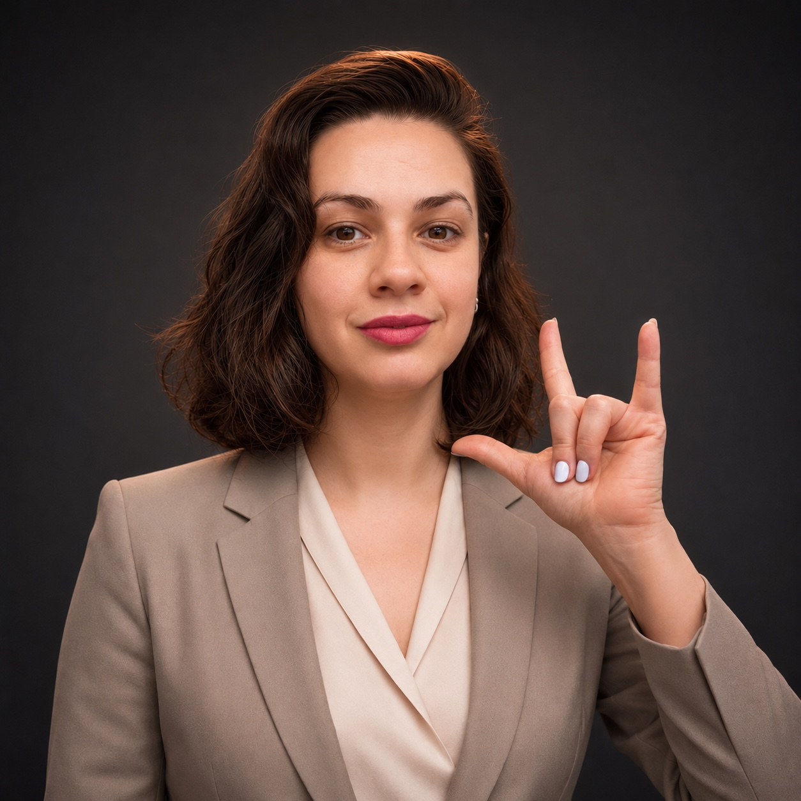

7.12.2026 | בזום
קורס רמה 1
לומדים מההתחלה, מתרגלים יחד ומתקדמים שלב אחר שלב.
פרטים והרשמה לרמה 1רוצים ללמוד שפת סימנים ולא יודעים מאיפה להתחיל?
קורסים קבוצתיים, שיעורים פרטיים, לימוד אונליין והרצאות על עולם החירשים. לומדים בצורה מסודרת, ברורה ועם מקום אמיתי לתרגול.

בחרו מסלול לקריאת פרטים נוספים או פנו אליי בכתב לבירור והתאמה.
7.12.2026 | בזום
לומדים מההתחלה, מתרגלים יחד ומתקדמים שלב אחר שלב.
פרטים והרשמה לרמה 1לממשיכים
כבר למדתם את הבסיס? ממשיכים להרחיב אוצר מילים ולפתח שיחה.
פרטים על רמה 2אחד על אחד בזום
לימוד שמותאם לרמה, למטרה ולקצב שלכם.
בירור שיעורים פרטייםלומדים בזמן שלכם
שיעורים מוקלטים ותרגולים שאפשר לחזור אליהם. פרטי ההשקה בקרוב.
עדכנו אותי על הקורסאונליין | סיפור אישי
היכרות עם התרבות החירשת, החיים והחוויות שמאחורי השפה.
פרטים על הרצאהלעובדים ולצוותים
יש אצלכם עובדים חירשים? בונים תקשורת ישירה ונגישה יותר במקום העבודה.
הצעה לארגוןלצוותים ולקבוצות
תוכן מותאם לאנשי חינוך, צוותים ונותני שירות.
פרטים על סדנהמשפחות, חברים וצוותים
רוצים ללמוד יחד? נתאים את הלימוד לקבוצה שלכם.
הצעה לקבוצהסיפור אישי ונגישות
איך נראים החיים עם חירשות ולקות ראייה? הרצאה אישית על תקשורת, עצמאות ונגישות.
פרטים על הרצאת תסמונת אשר ←לכל אחד יש סיבה אחרת. מה הסיבה שלכם?
יש בן משפחה חירש? לא צריך להסתפק בתיווך בשיחות בבית.
רוצים לדבר עם חבר חירש גם בלי להקליד כל משפט?
עובדים חירשים בצוות? תנו לעובדים כלים לתקשורת ישירה.
פוגשים ילדים או מבוגרים חירשים בעבודה? התחילו להבין ולתקשר.
רוצים להעניק שירות נגיש יותר ללקוחות חירשים?
תמיד רציתם ללמוד שפת סימנים? אפשר להתחיל גם בלי ידע קודם.
לצד צילומי המסך המקוריים מופיעים קטעים נבחרים מההמלצות כטקסט נגיש. ההמלצות מתייחסות ללימוד עם קארין לאורך השנים. לחצו על צילום לקריאת ההמלצה המקורית בגודל מלא.
הקורס היה אונליין ולא היה בו שום רגע משעמם! הוא היה מגוון ומלא בתרגילים יצירתיים.
קטע מתוך ההמלצה המקורית
לקריאה מוגדלת לחצו על התמונה
למדתי אצל קארין גם בשני קורסים קבוצתיים וגם בשיעורים פרטיים, ואני ממליצה עליה מכל הלב.
קטע מתוך ההמלצה המקורית
לקריאה מוגדלת לחצו על התמונה
קארין מורה עם סבלנות, חיוך, עידוד, התעניינות ואכפתיות גדולה לכל תלמיד/ה.
קטע מתוך ההמלצה המקורית
לקריאה מוגדלת לחצו על התמונה
החוויה שלי הייתה נעימה ומלאה באהבה וצחוק!
קטע מתוך ההמלצה המקורית
לקריאה מוגדלת לחצו על התמונה
קרין היא מורה סבלנית וחוזרת על החומר עד שהוא מובן, מעודדת שאלות גם במהלך השיעור וגם מחוצה לו.
קטע מתוך ההמלצה המקורית
לקריאה מוגדלת לחצו על התמונה
בזכותך התאהבתי בשפה הזאת, ועד היום אני לומדת איתך כי בשביל לרכוש שפה צריך המון תרגול והתמדה.
קטע מתוך ההמלצה המקורית
לקריאה מוגדלת לחצו על התמונה
למדתי המון וניסיתי להתאים לו את מה שלמדתי ממך.
קטע מתוך ההמלצה המקורית
לקריאה מוגדלת לחצו על התמונה
ידעה לעשות התאמות בלימוד בהתאם לקצב ההתקדמות שלי וידעה להתגמש בהתאם לאופי הלימוד שביקשתי ושהייתי צריך.
קטע מתוך ההמלצה המקורית
לקריאה מוגדלת לחצו על התמונה
הגעתי לקורס בלי הרבה ידע, ובזכות הסבלנות, ההסברים הברורים והאווירה הנעימה שלך הרגשתי שאני באמת מצליחה להבין ולהתקדם.
קטע מתוך ההמלצה המקורית
לקריאה מוגדלת לחצו על התמונה
אני חירשת מלידה, מורה לשפת הסימנים הישראלית, אשת חינוך ויוצרת. בעלת תואר ראשון בחינוך מיוחד ובתולדות האמנות מאוניברסיטת תל אביב, עם 13 שנות ניסיון בהוראה.
לימדתי יותר מאלף תלמידים ביותר ממאה קבוצות: משפחות, חברים של אנשים חירשים, אנשי מקצוע, צוותי חינוך וטיפול ואנשים שרצו ללמוד שפה חדשה.
כשעברתי להתגורר בבריטניה בשנת 2019, הייתי פתאום שוב תלמידה. למרות שאני חירשת ומכירה היטב את שפת הסימנים הישראלית, הייתי צריכה ללמוד את שפת הסימנים הבריטית מאפס. זו שפה אחרת, עם אוצר מילים ומבנה משלה.
הייתי צריכה לזכור סימנים חדשים, לתרגל ולהתמודד עם הרגעים שבהם יודעים מה רוצים להגיד, אבל עדיין לא יודעים איך. החוויה הזו עזרה לי להבין עוד יותר טוב מה עובר על התלמידים שלי.
לכן אני מקפידה על הסברים ברורים, התקדמות הדרגתית והרבה תרגול. חשוב לי שתוכלו להשתמש במה שלמדתם בשיחה אמיתית, ולא רק לזכור סימנים בזמן השיעור.
אני חיה גם עם תסמונת אשר, שמשלבת חירשות עם לקות ראייה מתקדמת. החוויה האישית שלי מלמדת אותי בכל יום משהו נוסף על תקשורת, עצמאות ונגישות.
לצד הוראת שפת הסימנים, אני מעבירה הרצאות על עולם החירשים, על החיים עם תסמונת אשר ועל הסיפור האישי שלי.
הקמתי את לב הסימן כדי לשלב את האהבה שלי לשפה, לחינוך וליצירה, וללמד בדרך שאני מאמינה בה: מקצועית, ברורה, נגישה ועם מקום לשאלות ולתרגול.
אני מביאה לשיעורים את הניסיון של המורה ואת ההבנה של מי שהייתה בעצמה תלמידה מתחילה. אשמח שתצטרפו אליי.
לא. קורס רמה 1 מיועד גם למי שלא למדו שפת סימנים בעבר.
כן. יש לימוד קבוצתי בזום ושיעורים פרטיים. קורס דיגיטלי ללימוד עצמי נמצא בהכנה.
כן. אפשר לפנות לקבלת פרטים על הכשרה לצוותים ולחברות, כולל חברות שמעסיקות עובדים חירשים.
בוחרים מסלול, קוראים את הפרטים ופונים בוואטסאפ או במייל. בכפתורי הוואטסאפ תיפתח הודעה מוכנה שאפשר לערוך ולשלוח.
בחרו מסלול לימוד או שלחו לי הודעה. אפשר לפנות אליי בכתב בוואטסאפ או במייל.